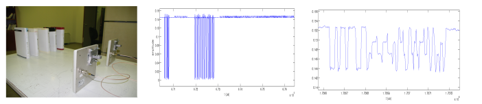
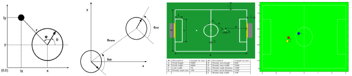

A SDR based RFID reader has been developed using USRP and GNU Radio. The reader is able to identify commercial Gen2 RFID Tags with FM0 line coding and 40kHz data rate and extract their EPC message. It has been tested with USRPN200 and a single front-end card RFX900. The code is available at github. A receiver for a backscatter sensor network has also been developed. The receiver is capable of processing multiple tags simultaneously in real time and report their measurements.

As part of my Diploma Thesis, a new approach was developed for localization in our RoboCup team Kouretes based on an Extended Kalman Filter (EKF). Our localization module integrates odometry and observations information, estimating the pose of the robot at any time. The initial pose of the robot in the field is approximately known, as it is limited to a small number of candidate field areas. Therefore, the robot must disambiguate its hypotheses about these initial poses and track afterwards its pose maintaining a reliable belief using all the available information. Github repository: Monas.
